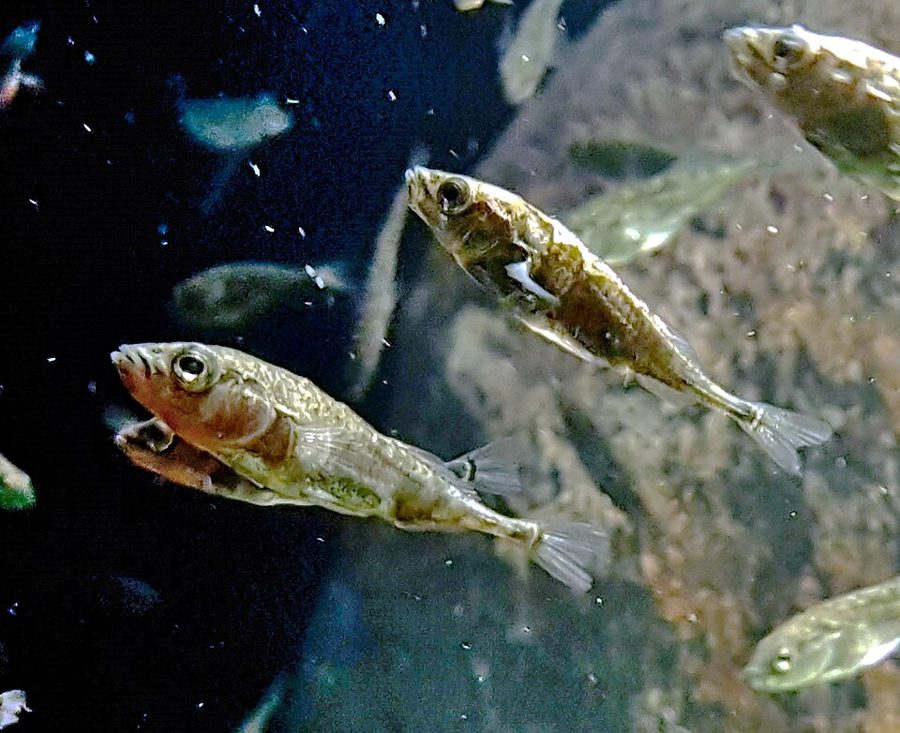
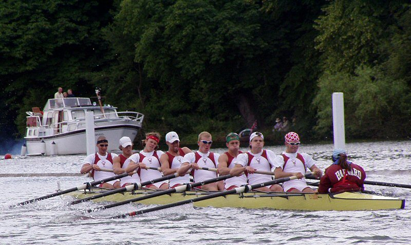
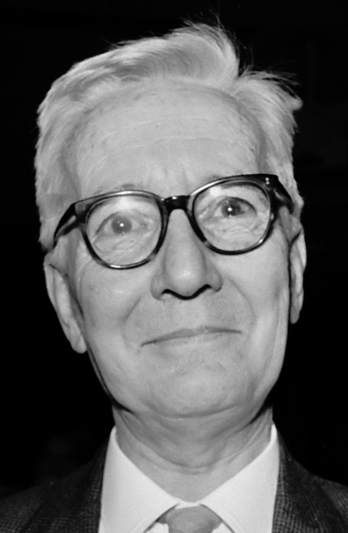
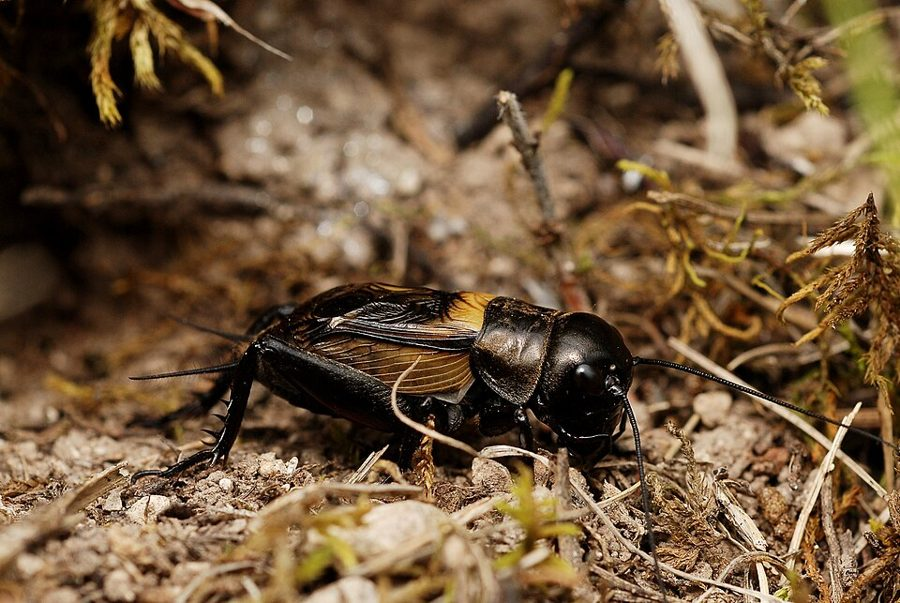
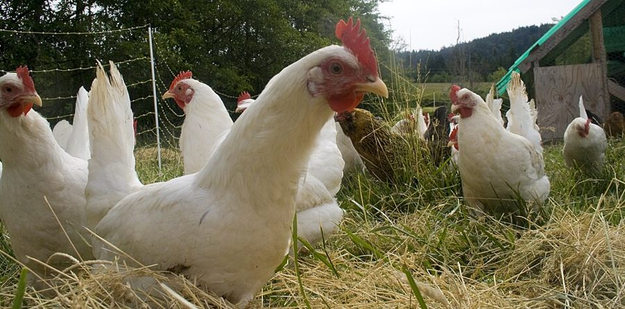

without fuss
… quickly and without fuss by tossing …
干脆利落、不吵不闹地
fuss 是小题大做、吵闹。抛硬币解决争端，是作者给「不相关的不对称」打的比方。
第 5 章的后半。上半页的鹰和鸽一样强、输赢的得失也一样；这半页拆掉这个假设：一方先到，一方块头大，一方记得上回输过，或者双方根本不是同一种动物，稳定的打法会变成什么样？用到的有刺鱼、帕眼蝶、墨西哥群居蜘蛛、蟋蟀、母鸡、狮子和羚羊。最后作者把 ESS 从打架的个体搬到同一个身体里合作的基因，接上第 3 章没讲完的赛艇队。读的时候抓两条线：一个和输赢无关的差别，凭什么也能定胜负；「看上去像一个整体」和「按整体选出来」是不是一回事。

上半页（05a）停在消耗战：双方一模一样，稳定的是让人猜不透。第 32 段点明，此前讲的都是「对称」的竞赛，这半页把双方的差别放进来。上半页许下的两件事在此兑现：第 49 段起回到单个基因，接上第 3 章 §7 搁下的赛艇队比方；第 57 段收起「个体是自私机器」的讲法，交给下一章的亲属。

一个和打得赢打不赢毫不相干的差别，比如谁先到，怎么能决定谁让谁？
读的时候带着这几个问题。不用先找答案，读完回来对照「检查一下理解」。
这半页的走法和上半页不同：上半页先从动物跳进模型，这半页一直待在模型里，一次加一个条件，每加一个就拿一种动物来对。§7 先列三种不对称，挑最怪的那种（只是谁先到）推出两个可能的稳定点，用刺鱼落地；再换成体形，推出一个违反常识的稳定点，又在括号里被一种蜘蛛推翻了自己刚说的话。§8 加上记忆，再把对手换成别的物种，读到「狮子为什么不吃狮子」会觉得话题跳了，其实问的还是同一件事：对方会不会还手。§9 是第二次大跳：先说一句后来自己承认过头的大话，再从打架的身体跳到身体里的基因，赛艇队的比方分两步，一步讲随大流，一步讲互补，最后第 57 段把话交给下一章。
作者落在哪：哪怕一个和输赢无关的差别，比如谁先到，也能成为大家都守的规矩，领地防卫也许就是这样来的；记忆、物种之间的差别都能放进同一套 ESS 里想。搬到基因上，基因库里的基因彼此配合、像一个整体，也可以只是单个基因各自被选的结果。
这一页是原书第 5 章的第 7–9 节。原书各章没有小标题，粗体的节名是本站起的，下面是这一节第一段开头的几个词，在电子书里搜它就能跳过去。读完打个勾。
先把这一页用到、作者默认你懂的几个概念讲一遍。讲的是概念本身，作者拿它推出什么，读原书时自己看。上半页讲过的进化稳定策略、鹰鸽博弈，前几章的基因库、类群选择，点进去看。
出自 Maynard Smith 和 Parker 的工作。真实的两个对手总有不同：个头、武器不一样，输赢对双方值的东西不一样，或者只是一方先到。最后这种和打得赢打不赢毫无关系，文献里叫「不相关的不对称」，可它正好能当抛硬币用：大家都按「先到的当鹰、后到的当鸽」行事，每场不用真打就分出了胜负，没人受伤，也没人耗时间，不守规矩的反而吃亏。前提是受伤的代价比赢的好处大，否则人人当鹰更划算，规矩守不住。这像靠左还是靠右行车：哪边本身无所谓，要紧的是大家一样；人人靠右的地方，你一个人靠左只会撞车。先到和后到的两方，本站照译本称为留驻者和闯入者；后来的文献把「先到就当鹰」叫作 bourgeois（有产者）策略。
在这一页：第 32–39 段。想看规矩怎样稳住，去上半页的模拟器勾上「留驻者」，从几乎全是鸽子跑 500 代（那里「试试看」第 3 条）。
Maynard Smith 起的名字，指和常识反着来、却也能稳定的规则，比如「后到的赢、先到的让」，或者「专挑比自己大的打，见了比自己小的就跑」。它能稳定，靠的是大家都这样做：在人人按反常规则行事的种群里，照常理出牌的个体反而处处碰上真打。一个博弈有两个稳定点时，每个稳定点周围有一片「引力区域」：种群的比例一旦落进去，就会一路被拉到那个稳定点，像山脊两边的雨水各流进一个湖。两片区域大小不一时，小的那片很难先被占住，稍有扰动就滑进大的那片。
在这一页：第 37、40–41 段，注 25 又补了海鸥和猪的例子。译本把这个词译成了两样，见下面的译本勘误。
把 ESS 的问法从个体搬到基因：不问「哪种打法别人改不过来」，而问「哪一组基因，新冒出来的基因挤不进去」。一个基因好不好，不是它单独的性质，要看它和基因库里其他基因配不配，就像一个函数好不好用，要看它和整个代码库的约定对不对得上：在一个全用某种约定的库里，换一种约定的新函数写得再好，也会处处报错。这样的基因库可以长期不变；偶尔有新基因挤进来，经过一段不稳定，停在另一组稳定的组合上。这里的「稳定」说的是一组基因的状态，不是某一个基因的「策略」。译本：「一组进化上稳定的基因」。
在这一页：第 55 段给出定义。第 49–54 段的赛艇队是作者为它打的比方，第 56 段说身体里基因之间的配合才是冰山的主体。
按在书里出现的顺序排，标题前是节号。只讲到读懂这一页需要的程度。

三刺鱼是北半球淡水和沿海常见的小鱼，繁殖季节雄鱼在水底筑巢，守着巢周围的一片水域。第 38 段的实验：鱼缸两头各有一条守巢的雄鱼，Tinbergen 把它们分别装进试管，试管移到谁的巢边，谁就摆出进攻姿态，另一条就想退。注 24 里作者承认，这个实验比 ESS 理论早，他用 ESS 去解读它是事后之见。
帕眼蝶是欧洲林地里常见的蝴蝶。雄蝶守着林下的光斑，因为雌蝶会被光斑吸引；光斑比雄蝶少，多出来的雄蝶在树冠里等机会。注 24 讲 Davies 在牛津附近 Wytham 林里的实验：把雄蝶捉来再一只只放出，先进光斑的被双方当作主人，后来的那只总是马上让开；设法让两只都「以为」自己是主人时，才打得又长又凶。作者说，这项研究和刺鱼不同，是照着 ESS 理论设计的。论文 1978 年发表在《动物行为》（Animal Behaviour）上。
第 41 段，作者刚写完「不指望在自然界找到似非而是的例子」，Maynard Smith 就给他看了 J. W. Burgess 1976 年 3 月在《科学美国人》（Scientific American）上写的群居蜘蛛 Oecobius civitas：被赶出窝的蜘蛛钻进同类的窝，窝主不打，自己跑出去另找地方，一只受惊，能让一大群蜘蛛挨个换窝。这就是「后到的赢」。注 25 又补了一例：1977 年一位读者给伦敦《泰晤士报》写信说，旗杆顶上的海鸥总给想落脚的那只让位，不管谁大谁小。
注 25 里作者最满意的例子。斯金纳箱是心理学的实验装置，动物按杠杆就有食物送出来。Baldwin 和 Meese 用的是放大版的猪圈，杠杆在一头，出食口在另一头，里面关两头猪。结果总是平日强势的那头跑去按杠杆，弱势的守在食槽边吃掉大半；强势的跑回来照样能把它挤开，只要还剩一点就够它继续按。反过来的安排维持不住：弱势的按完跑回来挤不进食槽，很快就不按了。作者说，这种稳定是一生之内学出来的，应叫 DSS（发育上稳定的策略），和进化时间上的 ESS 区分开。

第 42 段：Alexander 用一只模型蟋蟀去「揍」真蟋蟀，挨过揍的真蟋蟀再和同类打，输的可能更大。作者由此说，蟋蟀记得的是「最近赢得多还是输得多」这种笼统的战绩，并不认得具体的对手。注 26 补了他当时的研究生 Ted Burk 的证据，还有一条：刚打赢的雄蟋蟀更爱向雌性求偶，作者借第一代马尔博罗公爵夫人日记里的一句闺房玩笑，管它叫「马尔博罗公爵效应」。

鸡群的座次，挪威动物学家 Schjelderup-Ebbe 在 1920 年代初最早描述，英文叫 pecking order（啄序），后来成了日常用语。第 43 段说，一群互不相识的母鸡放在一起，先要打很多架，过一阵每只都认清了自己在谁之上、谁之下，打斗就少了。作者提到的观察是：成员稳定的鸡群产蛋比老换成员的鸡群多。他紧接着说这只是附带的好处。
第 44 段的知更鸟是欧洲的知更鸟（European robin），橙红胸脯的小鸟，不是北美叫 robin 的那种鸫。作者说它只把地盘守给别的知更鸟，不防大山雀，两种鸟的地盘图叠起来毫无章法。第 45–47 段换成捕食者和猎物：书里的羚羊泛指非洲草原上被狮子追的各种羚羊，作者拿它们问一个很少有人问的问题：猎物为什么跑，不还手。
注 27 里作者解释第 48 段为什么说了大话：当时生物学文献，尤其在美国，很少用 ESS 这个概念，E. O. Wilson 1975 年那本厚厚的《社会生物学》（Sociobiology）里一次都没出现这个词。
按节排，每节前面是分节地图里的节名。标着「每个字都认识」的，是熟词生义、习语和反话，最容易读错。灰色的那几个字是原句里的位置，在电子书里搜它就能找到。
对着中译本（40 周年增订版）读的时候看这一节。下面是译本这几节和这一页尾注里会让人读错的地方：灰字是英文原文那一处的几个词，在英文电子书里搜它；方框里是译本的原句，在译本电子书里搜它。措辞别扭但意思没错的不收。全书的勘误汇总在译本勘误。
… what Maynard Smith would call a paradoxical …
译本：「史密斯把这种策略称为自相矛盾的策略」
这里和第 40、41 段、注 25 是同一个术语 paradoxical strategy，译本这里作「自相矛盾的策略」，后面作「似非而是的策略」，读者会以为是两样东西。「自相矛盾」还像是说这种策略逻辑上不成立；原文的意思是它违反常识，却可以稳定。
… by the great ethologist Niko Tinbergen …
译本：「伟大的个体生态学家廷贝亨」
ethologist 是动物行为学家，不是「个体生态学家」，第 10 段译本已经错过一次（见上半页）。Tinbergen 是动物行为学的奠基人之一。
… This is incidentally good for the …
译本：「这也给整个群体带来好处」
原文有个 incidentally（附带地），译本没译。作者的意思是：鸡群得了好处只是副产品，不是座次存在的原因，这一段后半就在说不该说序位有「功能」。少了这个词，读起来像作者承认了群体好处。
… when viewed at the group level …
译本：「从群体水平上看，可以说是具有功能的」
原文是说：那些在群体层面看起来表现为优势序位的个体行为，才可以说有功能。「在群体层面看」修饰的是序位怎样显现；功能归个体行为。译本读成「从群体层面看具有功能」，把这一段的要点弄反了一半。
… the butterfly mimicry example of Chapter 3 …
译本：「在第3章蝴蝶模拟的例子中」
mimicry 是拟态：一种好吃的蝴蝶长得像另一种难吃的。第 3 章译本自己译作「拟态」。这里的「模拟」和第 4 章讲的计算机模拟不是一回事。
… observed fact: it is a tautology.
译本：「它不过是一个概念无数次的重复」
tautology 是逻辑上的同义反复：好基因被定义为活下来的基因，「活下来的是好基因」就必然成立，没说出新东西。作者接着说，真正有意思的是什么让基因好。这不是在承认理论空洞。
… Progressive evolution may be not so …
译本：「渐进的进化过程与其说是」
progressive evolution 指一路向前推进的演化。「渐进」在中文里是一点点连续地变，正好和这句要说的「一级级跳」相反。原文还有个 may（也许），译本去掉了，把作者的猜想说成了断言。注 28 的标题重复了这句，同样的问题。
… was treated, by both individuals, as …
译本：「它都会视自己为光斑的主人」
原文说先进光斑的那只被两只蝶都当作主人：不光它自己这样认为，后到的那只也认。规矩要双方都守，才是作者说的那种 ESS，这正是实验的要点。
… invariably makes way for another gull …
译本：「总是会激起另一只海鸥试图降落其上的欲望」
原文是旗杆上的海鸥总给想落下来的那只让位，不论两只谁大谁小。占着的让给后来的，这才是「后到的赢」的例子；译成「激起欲望」，这个例子就没了意思。
… such as genetic dominance, which are …
译本：「根本不可能弄清楚的遗传优势」
genetic dominance 是遗传学的显性（一对等位基因里哪个表现出来），不是「优势」。原文也只说这类细节在具体例子里通常不知道，没有说「根本不可能弄清楚」。
… punctuated equilibrium has been oversold.
译本：「我显得有些过分吹嘘间断平衡理论」
原文是：后来他对间断平衡论被人吹得太过颇为恼火（也许恼得过头了），如果因此伤了谁，他表示歉意。吹嘘的是别人，不是他；译本说成他自己吹嘘，意思正好反了。
Territorial ‘defence’ may simply be an ESS which arises because of the asymmetry in time of arrival— §7 第 39 段。本站译：领地「保卫」也许只是一个 ESS，起因于到达时间上的不对称
口气是一个挑衅性的推论：生物学家一直在问领地有什么好处，作者说这个问题也许根本不用问。关键词是 may simply，他没有断定。常见的误读是以为他否认领地有实际好处；他只是说，就算没有任何好处，先来后到这一点差别也足以让守地盘的行为稳定下来。他自己在第 37 段也说，完全任意的不对称在现实里大概不存在。领地还有别的解释，第 7 章会讲。
Selection at the low level of the single gene can give the impression of selection at some higher level.— §9 第 52 段。本站译：在单个基因这一低层面上的选择，可以给人一种在某个更高层面上进行选择的印象。
这是全书基因视角的核心句之一，也是作者对「基因原子论」批评的回答（第 3 章的注 8 指的就是这几段）。关键词是 can：他说的是「可以」，不是「总是」；就在第 50 段，他还承认蝴蝶拟态那例看起来正是一组基因作为单位被选。常被读成「一切高层选择都是幻觉」，那比原文说得重。
正文里的星号是 1989 年第二版加的，点了跳到书后的尾注。下面是这一页的每个星号：注里说了什么，值不值得现在就点开。英文是星号前紧挨着的几个词，在电子书里搜它就能找到那个星号。
… an experiment of characteristically ingenious simplicity.*
作者先承认：Tinbergen 的实验在 ESS 理论之前，他第一版的 ESS 解读是事后加上去的。然后讲 Davies 照着 ESS 理论设计的帕眼蝶实验（见「书里的人和研究」）：先进光斑的被双方当作主人，后来的毫无例外马上让开；骗得两只都以为自己是主人时，才真打起来。值得点开，比正文的刺鱼更有说服力。
… paradoxical in the sense of page 79.*
两个例子。一是读者写给《泰晤士报》的信：旗杆上的海鸥总给后来的让位，作者说这也许算一例。二是他最满意的斯金纳猪圈：强势的猪干活、弱势的猪吃（见「书里的人和研究」）。他把这种一生之内学出来的稳定叫 DSS，和进化时间上的 ESS 分开。猪那段写得很好笑，值得读。
… dominance hierarchy is likely to develop.*
他当时的研究生 Ted Burk 给蟋蟀的「假序位」补了证据，还发现刚打赢的雄蟋蟀更爱求偶。作者借公爵夫人日记里一句闺房玩笑给它起名，又顺手引了一条网球选手赛前赛后睾酮水平的新闻。一条有趣的补充，读正文时可以先跳过。
… in evolutionary theory since Darwin.*
作者直说第 48 段这句过头了，是对当时（尤其美国）忽视 ESS 的过激反应。他换成更克制的说法：不用 ESS 的语言也行，只要想得够清楚；但在不知道遗传细节的大多数情况下，它是想清楚的好帮手，最大的用处是帮人避开理论错误。他还澄清，ESS 模型并不假定无性生殖，只是不管遗传细节。值得点开。
… from stable plateau to stable plateau.*
作者说第 55 段恰好是间断平衡论一种说法的公允概括；那个理论三年前已经发表，他写的时候并不知道。后来他在《盲眼钟表匠》等处对这个理论被吹过头颇有怨气，这里说也许过分了，向可能被伤到的人致歉。他没有收回第 55 段，只是给它定了位。译本把这条注的意思译反了，见译本勘误。
读完这一页的几节再看。下面是作者在这几节里的论点，由本站按论点重新组织，不按原书的顺序；每条下面是依据所在的段落，拿不准就回书里那几段再读一遍。
作者转述 Maynard Smith 和 Parker 的不对称竞赛：先来后到即使毫无实际好处，「先到的打、后到的退」也能稳定，反过来也能，看哪个先占多数。他接着说完全任意的不对称现实里大概不存在，而「后到的赢」会逼得大家不停挪窝、自行瓦解，所以前一种更可能；刺鱼正合这条规矩。他由此推测，问领地有什么好处，也许本身就多余。
§7 第 34–39 段，注 24作者推测体形大概是最重要的真实差别，「见大就逃、见小就打」是稳定的；受伤代价大时，「专挑大的打」也可能稳定，因为全是这种个体时没人受伤。可它要占压倒多数才划算，种群稍一偏就滑向常识的那个稳定点，所以作者怀疑自然界里找得到例子，随即在括号里认错，举出墨西哥群居蜘蛛。
§7 第 40–41 段，注 25蟋蟀只记得笼统的战绩，母鸡认得具体对手，两种记忆都会排出座次、减少打斗。作者说序位是群体的性质，谈不上进化意义上的「功能」，鸡群得益是附带的。物种之间天生的不对称更大，他推测猎物多半逃而不还手就是由此而来；狮子不猎狮子，是因为同类会还手，这样做不是 ESS。
§8 第 42–47 段回到第 3 章的赛艇队：基因好不好，要看它和基因库里其他基因配不配。作者承认蝴蝶拟态那例像是一组基因作为单位被选，但说 ESS 让人看到，同样的结果也可以只靠单个基因各自被选得到，他觉得这样想更简约。基因库会成为新基因挤不进去的稳定组合；种群像一个自我调节的整体，在他看来是单个基因层面的选择造成的假象。
§9 第 49–56 段1976 年他说有个直觉：ESS 会让人第一次看清一群各自独立的自私个体怎样像一个有组织的整体，还预期它会彻底改变生态学。（1989 年的尾注改成：这句过头了，不用 ESS 的语言也能想清楚，它最大的用处是帮人避开理论错误。）
§9 第 48 段，注 27合起来：上半页说稳定不等于对大家最好，这半页补上：稳定的规矩可以建立在毫无道理的差别上，可以靠记忆一场场攒出来，也可以出现在基因之间。看上去为整体安排好的秩序，作者都想用「各自被选、谁也改不过来」来解释，不必假定有谁在为群体打算。
第 5 章合起来：作者要解释同类打斗为什么常有克制，又不借「为了物种」。他借来 Maynard Smith 的 ESS：一种打法好不好要看别人怎么打，能留下来的是多数采用后谁也改不过来的打法。鹰鸽模型停在一个稳定比例上，比人人当鸽子差，却防得住背叛（「只有还击者稳定」那一条 1989 年撤回了）；消耗战里留下的是扑克脸；不对称和记忆让输赢可以不流血地定下来。最后他把同一种眼光推回基因：基因库是一组彼此配合的稳定基因。第 57 段说明，把个体当独立的自私机器，遇到亲属就不灵了，那是第 6 章。
这本书 1976 年出版。下面挑出这一页里能被后来的研究检验的说法，分「书里 / 当时 / 今天」三栏，并给一个结论。结论判的是标题里「书里的说法：」后面那一句。全书的这一节汇总在对照今天。
读完作者的论点，再看它站不站得住。每一块摆出三样：主流怎么看，作者怎么看，本站的评论。最后一句是本站对这一页的总体判断。
主流看法：演化意义上的「功能」，指一个性状为什么被选择留下来。群体的性质要有这种功能，得有群体之间的选择。这在自然界里有多常见仍有争论，但人工条件下做得到：Muir 1996 年把蛋鸡按笼（一个家系一笼）整体选育，多鸡笼里的年死亡率从第 2 代的 68% 降到第 6 代的 8.8%。
作者的看法：序位是群体的性质，谈不上进化意义上的功能；鸡群得益是附带的，最好不用「功能」这个词（第 43 段）。很多关于「社会组织」的说法暗藏类群选择的假定（第 48 段）。
本站的评论：这一刀切得准。自然条件下没有谁按产蛋多少整鸡群地淘汰，说序位「为了」减少打斗，就把因果说反了。Muir 的实验从另一面印证了同一个道理：群体的好处要成为选择的目标，得真有一个按群筛选的过程。所以该问的不是「对群体有没有好处」，而是「有没有按群体筛选」。
主流看法：化石里的长期停滞很常见。Hunt 2007 年分析了 250 多条化石性状序列，只有约 5% 最符合持续的定向变化，其余大致一半像随机游走、一半是停滞。停滞的原因学界还在争，不一定是基因组合的稳定。
作者的看法：第 55 段：种群可能有不止一个稳定点，演化也许是从一个平台跳到另一个；注 28 说这恰好是间断平衡论一种说法的概括，当年他并不知道这个理论。
本站的评论：第 55 段是纯理论的推演：只要有不止一个稳定组合，就可能跳。它和化石里的停滞对得上，却不等于解释了停滞；从基因库的稳定到化石形态的不变，中间隔着发育和生态好几层。读的时候当作一个说得通的可能，不当证据。作者用的 may 也正是这个分寸。
主流看法：ESS 和演化博弈论后来成了行为生态学的标准工具，Maynard Smith 1982 年的《演化与博弈论》（Evolution and the Theory of Games）是经典，经济学也拿它研究惯例怎样形成。
作者的看法：1976 年说它也许是达尔文以来最重要的进展之一（第 48 段）；1989 年在注 27 里说过头了，它最大的用处是帮人避开理论错误。
本站的评论：注 27 的说法更站得住，也更有用。这半页正好演示它怎样帮人避错：问一句「大家都这样做时，谁改得过来」，就不必假定领地、序位在为群体服务。它也有边界：先到者赢在模型里很漂亮，到了野外，实验很难分清是约定还是实力（见对照今天）。工具好用，不等于每个现象都已被它解释。
本站的总体看法：这半页最值得带走两个想法：规矩可以建立在任意的差别上，靠大家都守而稳定；看起来为群体服务，不等于为群体而选。具体到领地、座次、演化的台阶，作者用的多是推测（may、probably、I have a hunch），应当当作待检验的假说读，他自己也在尾注里降了调。
先在心里答，再点开。答错的那题，回书里把对应那一节再读一遍。
碰上后到的对手它赢，碰上先到的对手就要真打，常常受重伤，平均下来比守规矩的低。守规矩的从不受伤、不耗时间，输赢各半。
在那样的种群里谁都不想当主人，只好不停挪地方，费时费力，「主人」这个类别本身都会消失；「先到的赢」则让大家守着一块地不走，这就是常见的领地行为。他还说先到者现实里多半另有优势，比如熟悉地形、不喘。
全是这种个体时，每场都是大的那个跑，没人受伤；一个按常理出牌的个体却总碰上拼命还手的小个子。可它要占压倒多数才划算，种群稍一偏就落进常识策略的引力区域。
蟋蟀不认得对手，只记得自己最近总赢还是总输，赢惯了越来越敢打；母鸡认得每个对手，记住谁打败过自己，对它让步。
序位是群体的性质，进化意义上的功能只能说个体的行为；打斗变少、产蛋变多对鸡群只是附带的好处。他建议干脆不用「功能」，按有个体识别和记忆的不对称竞赛来想。
前一个是随大流：谁占多数，少数派就吃亏，结果是清一色，两种稳定状态取其一。后一个是互补，像鹰在鸽群里吃香，结果是四左四右。两种情况教练都只按个人表现挑人，整体的搭配是自己冒出来的。
不是。这句话按定义成立，所以没有内容；他要问的是什么让一个基因活下来，答案要放在当前基因库的背景下看，这才是他修正「会造好身体」那个初步说法的地方。
用一句话说这一页，写给一个没读过的人。
想一想：你待过的团队或社区里，有没有一条本身无所谓、却人人都守的规矩（谁先提的方案谁负责、先占先得的工位、某种代码风格）？它是怎么定下来的？换成反过来的规矩，能不能一样运转？
读过又忘了，从这里想起来。挑的是这一页最值得记住的模型、动物和说法，不按原书顺序；每条后面是节号，想细看就回书里那一节。全书各页的这一节都收在全书回顾。
一句话：一个和输赢无关的差别，比如谁先到，也能成为人人都守的规矩；基因库也一样，各个基因各自被选，合起来却像一个协调好的整体。
Tinbergen 把两条雄刺鱼装进试管，移到谁的巢边谁就进攻，另一条就退。作者说这正合「先到的打、后到的退」，也承认这是事后用 ESS 去解读。
§7要是规矩是「后到的赢」，大家就得不停搬家，千万别被逮着当主人，这种规矩会自己瓦解；所以常见的是守着地盘不走的领地行为。
§7作者刚写完「不指望找到似非而是的例子」，Maynard Smith 就给他看了墨西哥群居蜘蛛：窝主见了闯入者就让出窝，自己去别家。
§7同类会还手，吃同类不是 ESS；猎物和捕食者差别太大，所以羚羊跑而不打，站住迎战的羚羊比不过跑没了影的同伴。
§8教练只按个人成绩挑人，少数派一上船就沟通不畅，结果挑出清一色的队伍。看上去像按语言整组挑，其实是一个个挑的。
§91976 年说 ESS 也许是达尔文以来最重要的进展之一；1989 年作者自己在尾注里说这话过头了，它最大的用处是帮人避开理论错误。
§9